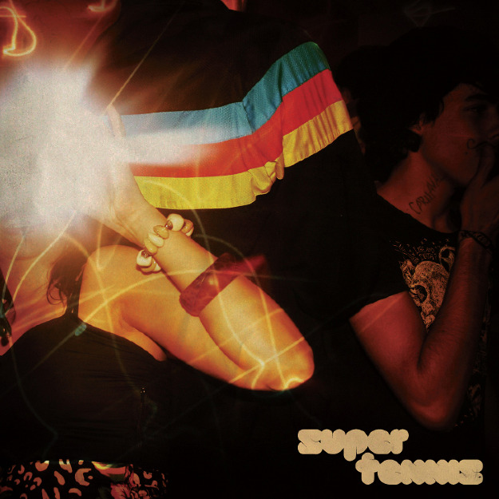
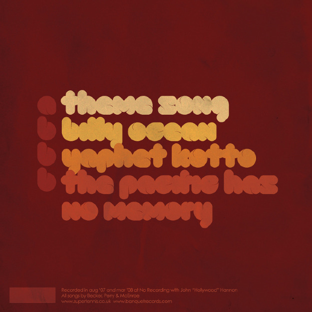
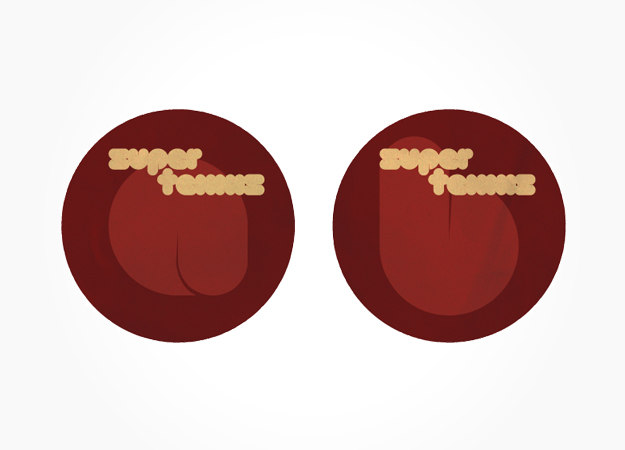
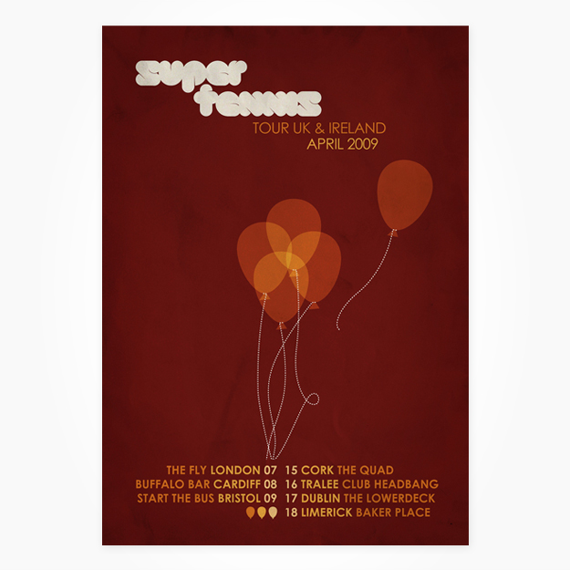
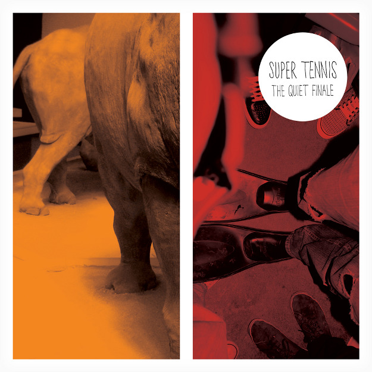
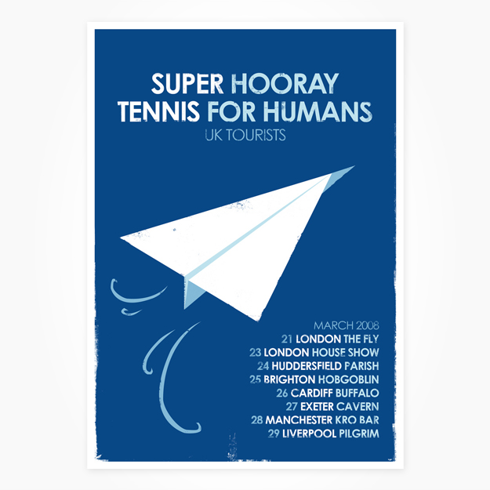
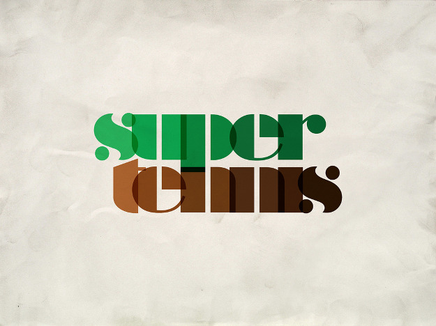
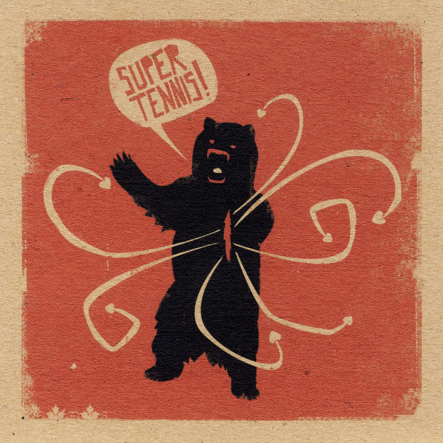
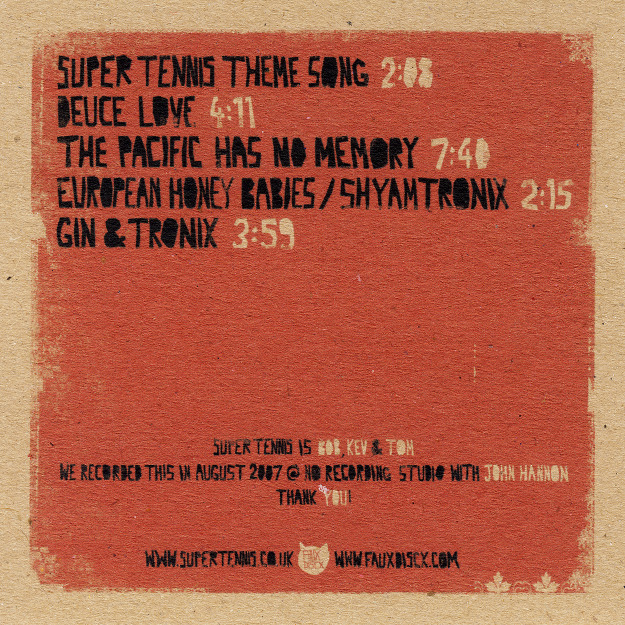
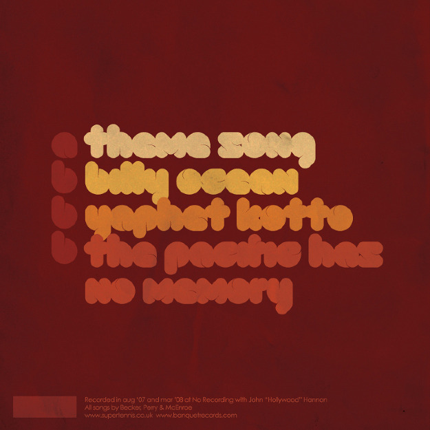
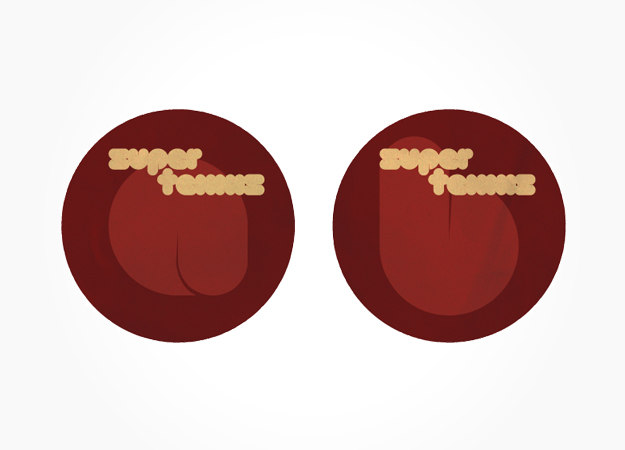
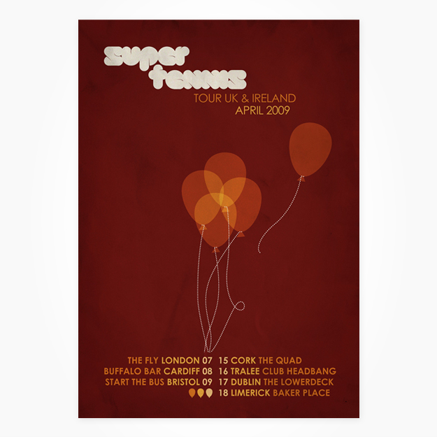
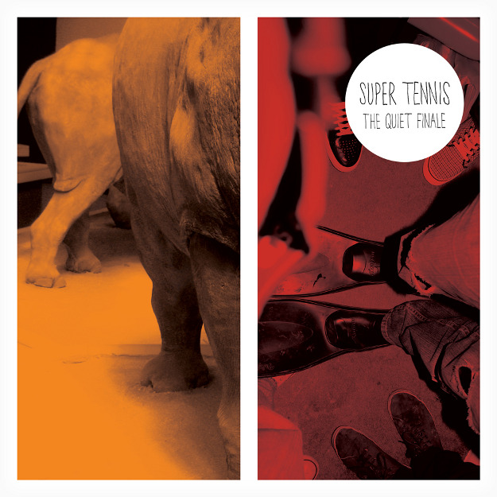
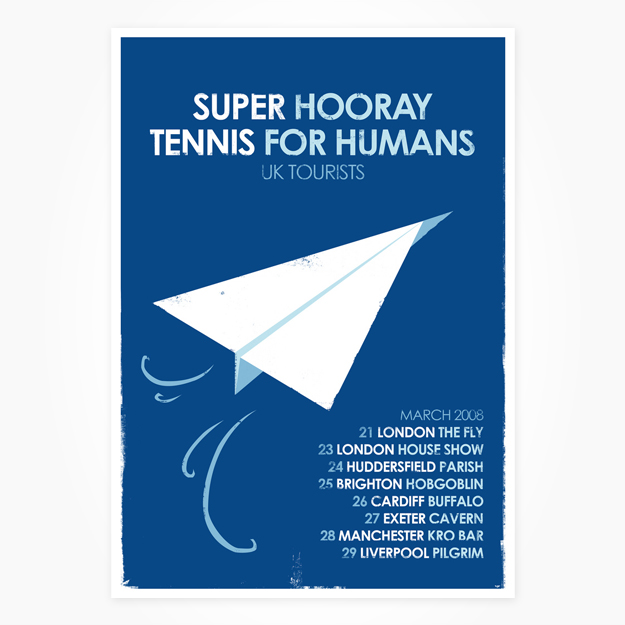
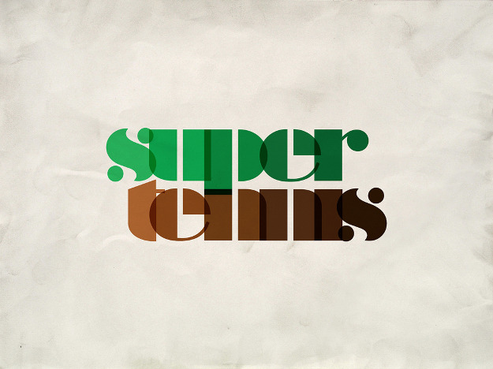
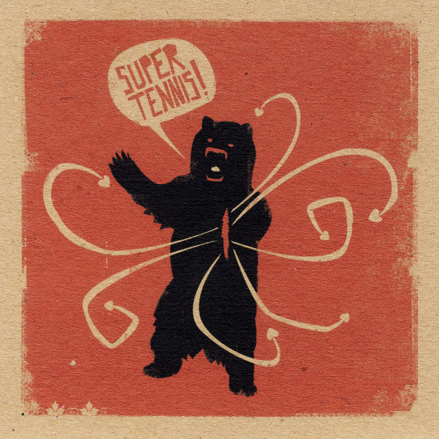
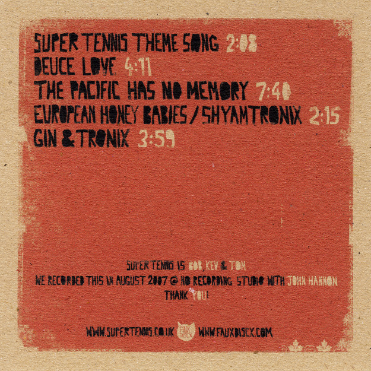
Key
1. Theme Song: Front 10″ Record Sleeve
2. Theme Song: Back 10″ Record Sleeve
3. Theme Song: Labels 10″ Record Sleeve
4. ’09 UK & Ireland Tour Poster
5. The Quiet Finale Cover Japan version
6. Kruger Singles Club Digital only release
7. ’08 UK Tour Poster
8. Logotype
9. Super Tennis EP Front
10. Super Tennis EP Back